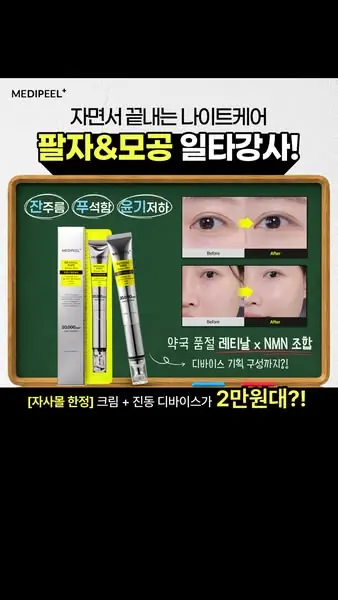
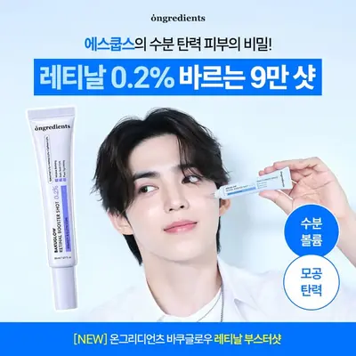
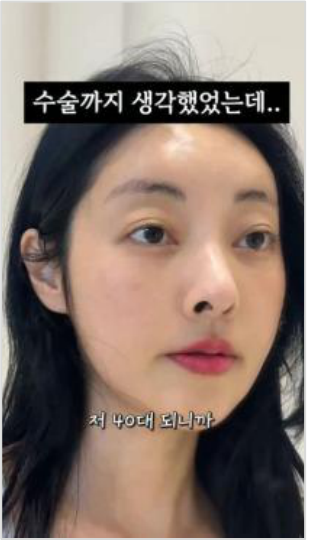

에이프릴스킨 · 레티날레티날 & 보르피린
레티날 & 보르피린
볼륨 리프팅
 ↗
↗레티날 볼륨 세럼
레티날과 보르피린 조합을 볼륨 리프팅으로 연결한 이미지 광고.
기존 BP 자료레티날 신제품 · 소재 방향 & 레퍼런스
볼 꺼짐·땅콩형·팔자 고민을 중안부 탄력으로 묶고,
쭉 늘어나는 실타래 제형으로 연결합니다.
리포좀화 레티날 · 액티브 기준
볼 꺼짐 · 땅콩형 · 팔자
확장 부위눈밑 · 눈가
레티날 · 볼륨과 탄력
볼륨·팔자·리프팅을 직접 말하는 레티날 제품 광고입니다.
↗레티날 볼륨 세럼
레티날과 보르피린 조합을 볼륨 리프팅으로 연결한 이미지 광고.
기존 BP 자료 ↗
↗레티날 팔자주름 리프팅 패치
꺼진 팔자·볼륨과 나이 인상을 한 화면에 연결.
ACIS 키워드·레티날 68행
↗레티날 × NMN 아이크림 기획
팔자·모공을 한 화면에 묶고 레티날과 NMN 조합을 강조.
기존 BP 자료중안부 탄력을 중심에 두고 볼 꺼짐·땅콩형·팔자를 구체적인 고민으로 보여주세요. 고민 부위를 짚는 접사 → 손끝에서 늘어나는 레티날 실 → 부위별 도포로 연결하는 방향입니다.
레티날 · 눈밑과 눈가
눈가 전용 레티날 제품이 어떤 고민을 크게 보여주는지 비교합니다.
 ↗
↗레티날 스킨부스터 세럼
눈밑을 도구로 짚기 → 날짜별 도포 → 전후 비교.
기존 BP 자료 ↗
↗HPR 레티날 아이크림
눈가를 직접 질문하는 훅.
ACIS 키워드·레티날 60행 ↗
↗레티날 롤온 아이크림
눈가 롤온 제품과 탄력·붓기 카피를 결합.
ACIS 키워드·레티날 88행눈밑을 하나로 묶기보다 자글한 주름·처짐·꺼짐 중 어떤 상태를 보여줄지 먼저 정해주세요. 눈 아래를 짚는 접사와 도포 동작을 참고할 수 있습니다.
레티날 · 시술 연상과 강한 표현
아래 수치와 문구는 경쟁사 광고에서 사용한 표현입니다.

↗바쿠글로우 레티날 부스터샷
인물·튜브 옆에 함량과 샷 수를 크게 표시.
기존 BP 자료 ↗
↗레티날 미간주름 패치
시술의 비용·고통을 먼저 제시하고 붙이는 관리로 연결.
ACIS 키워드·레티날 82행 ↗
↗레티날 NMN 아이크림
레티놀 경험의 불만을 먼저 짚고 레티날 조합과 큰 수치를 제시.
ACIS 키워드·레티날 69행시술의 고통·비용을 먼저 말하거나, 시술명·샷 수로 관리 강도를 느끼게 하는 구조입니다. 글로우덤은 ‘넣는 실 → 바르는 레티날 실’이라는 제형 연결을 중심으로 검토해주세요.
레티날 · 성분과 도포 장면
함량·침투 표현과 실제 부위별 도포를 함께 봅니다.
 ↗
↗비타리프트 포르테시모
주름·탄력의 변화 표현과 고함량 숫자를 강조한 이미지 광고.
기존 BP 자료 ↗
↗레티날 볼륨 세럼
광고 본문에서 얼굴·목 도포와 롤러 흡수 동작을 설명.
기존 BP 자료 ↗
↗더 비타 A 레티날 샷 타이트닝 부스터
0초 관리실 기기 → 12초 이마·볼 점도포. 랩은 자사 기사용이라 새 제안에서 제외.
기존 BP 자료레티날 0.1%과 실타래 제형을 한 화면에서 연결합니다. 길게 늘어나는 제형 접사 → 고민 부위에 얇게 도포하는 동작을 핵심 비주얼로 잡아주세요.
4050 부위·시술 표현 참고
제품·광고소재 기획안에서 가져온 광고입니다. 이 세 사례는 레티날 제품 BP와 별도로, 눈가를 부르는 언어와 첫 장면을 참고합니다.
 ↗
↗아이크림
부위어로 바로 시작하는 광고.
레티날 제품·광고소재기획안 p.15베놈크림
스크럽 차림 화자가 시술을 말하는 광고.
레티날 제품·광고소재기획안 p.17
↗아이크림
40대 화자가 수술 고민으로 시작.
레티날 제품·광고소재기획안 p.20눈밑지 고민 → 수술까지 생각한 상황 → 집에서 하는 관리처럼 부위와 상황을 구체화하는 방식입니다. 레티날 광고의 눈밑주름·눈가 탄력 표현과 함께 검토해주세요.
레티놀 · 서브 레퍼런스
레티놀은 보조 비교군입니다. 아래는 경쟁사 광고의 성분 비교와 강조 표현입니다.
글로우덤 연결 방향
볼 꺼짐 · 땅콩형 · 팔자
눈밑·눈가는 확장 방향
손끝에서 뽑히는 실타래 접사
고민 부위에 도포하는 장면
리포좀화 레티날, 액티브 기준
4050 주름·탄력 크림
위 소구와 예시 소재를 참고해 레티날 신제품의 소재 방향성을 제안 부탁드립니다.
 ↗
↗